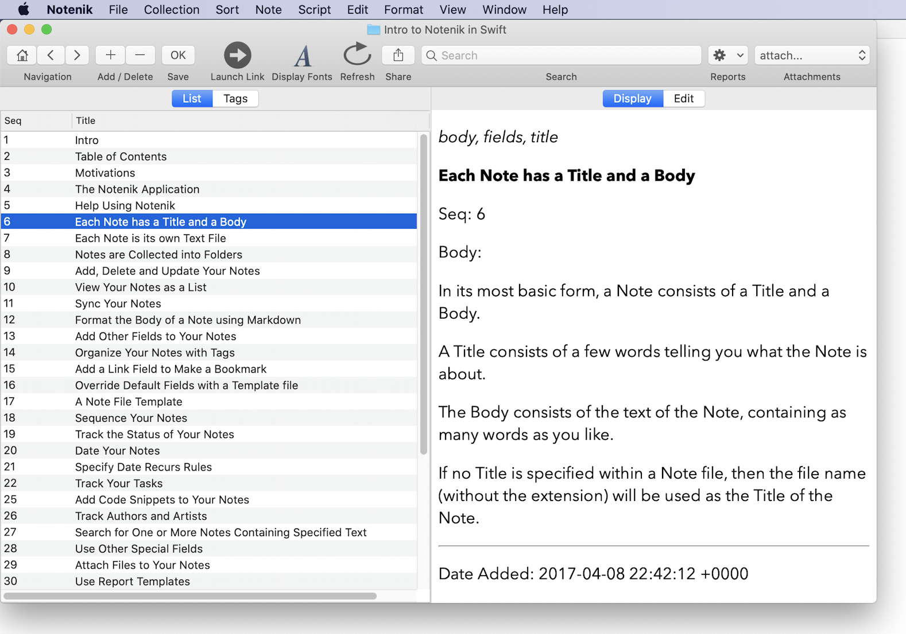

Notenik: A Contrarian Mix of Old and New
Published 24 Oct 2019
I started programming professionally over forty years ago, in 1973.
My first Macintosh computer was an SE, and I’ve been using one Mac or another as my preferred computing device since 1988.
However 2019 was the year in which I was able to realize my long-harbored wish of combining these two interests, and releasing my first native Mac app.
Given my background, then, it should probably come as no surprise that my note-taking app, dubbed Notenik, is a sometimes surprising mix of old and new.
Let me start by telling you about the new things that I’ve embraced with this app.
The Shiny New Stuff
I’ve used Swift for all of the code behind Notenik. I had previously done a fair bit of programming in Java. And I had taken a run at Objective-C a few years ago, but found its idiosyncratic syntax to be a bridge too far for my programming tastes. And I’d heard that the first few years of Swift were a bumpy ride for early adopters. But even though trying to learn Xcode, Swift and AppKit all at the same time was a bit much, the learning curve was worth it, and I’m now a happy convert to Apple’s shiny new programming language.
When it came to the decision of how to release my software for use by others, I opted to go all in with the Mac App Store. And I’m happy to report, after going through the initial release as well as several follow-on updates, that this feels like the right decision. The store makes it easy for Mac users to find and install and trust and update my software. And as a developer, I’ve found the release of new versions to be a relatively smooth and straightforward process. I did receive some early rejections, but those came with entirely reasonable requests for changes, and once I made those, it was smooth sailing. And later updates all went through the review and release process within the space of a few days.
Of course, along with these other new items come all of the latest Apple security restrictions on what apps can and can’t do. But rather than fight and resist these, I decided to embrace them. So my app lets the user decide what folders he or she wishes Notenik to have access to, rather than assuming full disk access. So we’re working entirely within the macOS sandbox, as it’s called.
And then I decided to make my app available to users at no charge, and as open-source software. For me this sort of app development is a hobby, not a business. I’ve selfishly written Notenik for my own use and entertainment, but if others also find it useful then that’s just a bonus, both for me and for others.
Finally I decided to use Markdown to allow users to format the bodies of their notes. Notenik will then use Down and cmark to render users’ notes per the CommonMark spec.
The Great Old Stuff
There are a number of recent trends in Mac app development that have tended to assume users want a simple, pretty face to their apps, but don’t want to be bothered with whatever may be going on under the hood.
This sort of newness doesn’t have much appeal for me. Rather than me making all of the decisions about what you want to do with the app, I believe it’s better to let you make decisions for yourself. So I’ve stayed old school in the following respects.
My app allows, and perhaps even encourages, the user to open multiple windows. After all, you’re using this on a Mac, not an iPhone or an iPad. Open as many as you want. Make them as big or as small as you like. Put them anywhere you wish on your screen. As the user, you’re in charge of how many windows you want open at a time, and how you arrange them.
My app uses a familiar and straightforward user interface. There’s nothing newfangled or confusing here. You can do pretty much everything with menus, tabs, buttons and scrollbars.
Notenik stores all of its data in folders full of text files, and the user decides explicitly where these should be stored. Create as many folders as you’d like, and put them wherever you think best. You can even decide what file extension you’d like Notenik to use for the text files. And if you’d like to open Notenik files with your trusted text editor – whether that’s BBEdit or something else – then knock yourself out. No secrets here. And of course you can backup and sync all of this data however you would like, because it’s all just there in an easily accessible form.
And rather than being an app designed with laser-like focus for one particular task, Notenik is designed to be flexible and extensible. Every note has a title and a body. But you can also add other fields if you’d like. A date. A link. Tags. And other stuff. You decide.
Bottom Line
I tend to view programming, as well as other forms of writing, as a means of finding out what I really want to say. Notenik is certainly not a perfect app, but it’s a pretty good expression of my intentions to create a Mac app that in many respects is fully modern, but that also carries forward many of the empowering aspects of personal computing that I’ve come to appreciate over the years.
It certainly won’t be for everyone, but I’m hoping that at least a few other people will find it useful.
If you have something you’d like to say about it, then feel free to shoot me an email. I’d be happy to hear from you. 